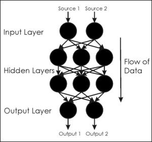
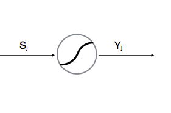
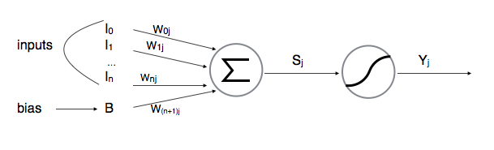

Formation Neural Networks
Présenté par Béchir
Les termes techniques
Le principe
Le Perceptrone

Le Perceptrone
La neurone
Les poids
Sj = Somme(Wij.Yi); i 0-->n
L'apprentissage
Backward Propagation
Le plus connus et le plus rapide
Utile quand on a suffisament de données
Utilisé pour le supervised learning
Genetic learning
Utile quand on n'a pas suffisament de données
Si on connais seulement le but et on connais pas comment l'atteindre
Utilisé pour le unsupervised learning
Metrics
Network configuration
- learning rate
- hidden layers
- number of neurones per hidden layer
- squashing function
Metrics
Training set & validation set
- Accurancy
- Error tolerance
- Overfed networks
Data processing
Input/output
- Binaire flou
- Minimiser l'input sans perdre l'information
- L'input est relative au probleme mais aussi au réseau
Convolution
La convolution est une fonction determinant la valeur d'une variable par rapport à son entourage
Pas de règle fix, encore une fois ça depend du problem et du réseau